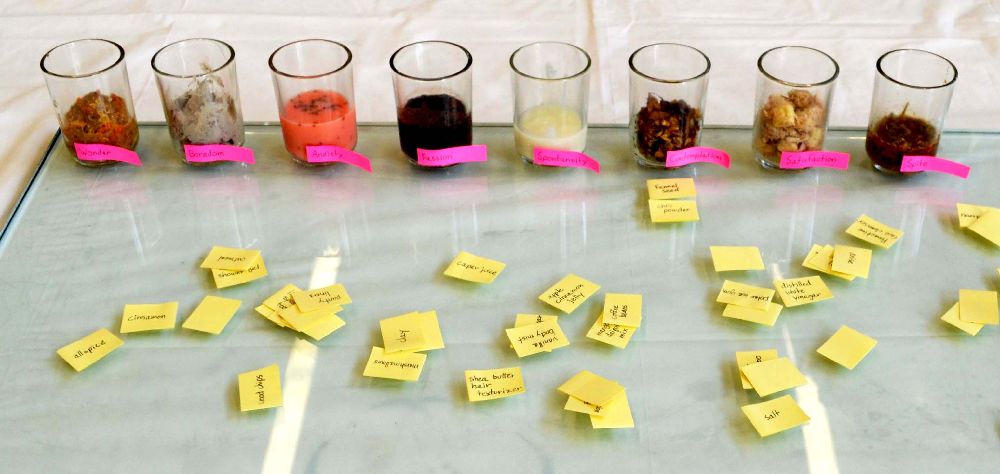
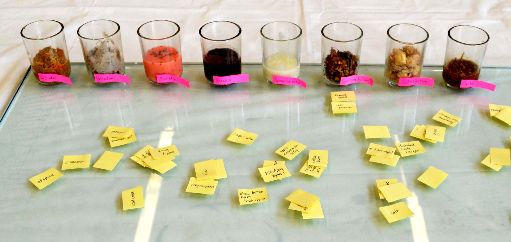
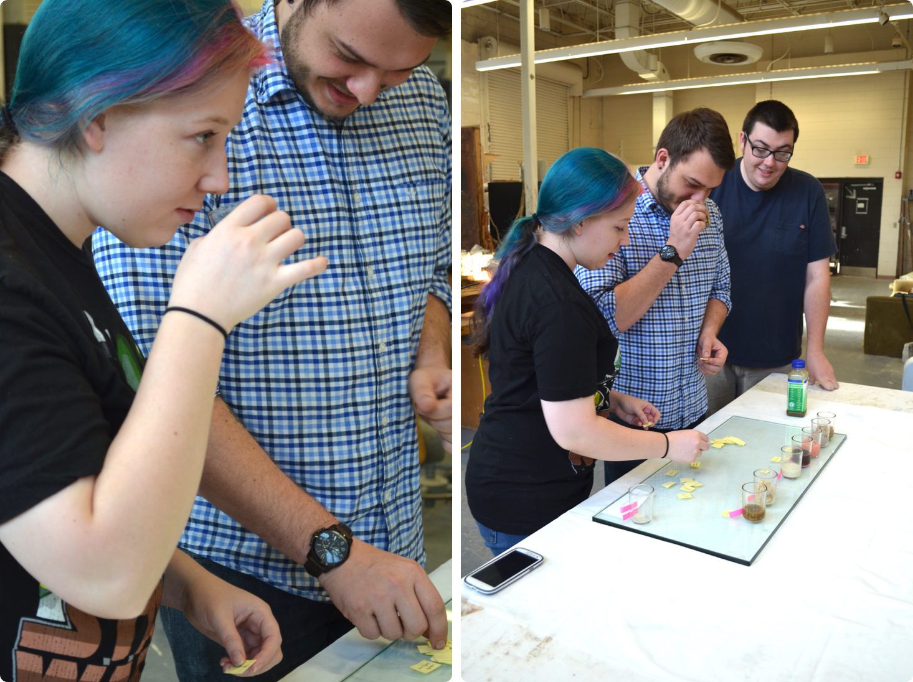

Exploring perceptual connections between scent and emotion
We know that our perceptions of smell can influence our emotional state. By perceptions, I’m talking both about the processes by which our bodies interpret external physical stimuli, and about our subjective mental interpretations of our environment.
Scent can cause enjoyment, irritation, or transport us to a now-clear-as-day distant memory in an instant. Other times, the emotional result is harder to explain. Even the language we use to describe smell is often ambiguous, or else dependent on reference.
If scent and emotion are so connected, I wondered, what would the “essence” of a single particular emotion smell like? And would others agree with my interpretation? I began mixing ingredients, trying to “discover” the pure scent of eight different emotions. I created, from left to right: Wonder, Boredom, Anxiety, Passion, Spontaneity, Contemplation, Satisfaction, and Spite.

I first tried to imagine what the emotion would smell like, finding myself using general words to describe the scent, “dark” or “high” or “bright” or “soft” or “sharp,” words that could just as well describe a visual, auditory, or textural experience.
Then I would mix whatever ingredients I could find that I thought would bring the scent a little closer to the distilled emotion. I ended up using mostly food items and body products, as well as some natural things I found outside.
Spontaneity is on the list, but it was actually not one of the original emotions I had intended to make. Creativity was what I was going for, but I could never get my mixture to smell close enough to what I was imagining - something sparkly, but lower to the ground and evenly distributed. I renamed the mix to Spontaneity, which is a little higher up, slightly off-center, and the sparkles are more attention-seeking.
I recognize that my scent creations were certainly based on my own associations between smell, emotion, and language. But I was curious to see how others’ interpretations would compare to my own. To further explore, I set up a place for visitors to experience these scentsations for themselves. I gave them the full list of ingredients, and let them decide which ingredients they thought belonged to which smells.
 

After the fact, I realized that doing it this way probably made people more likely to arrange based on their emotional associations with the ingredients (or just based on looking at the mixtures) rather than the pure scent. In hindsight I would’ve had them first describe the emotion each smell provided without knowing what I had intended it to be, or what ingredients it was made of.
Make your own emotions at home!
| Wonder | brown sugar, cardamom, cinnamon, coconut sunrise shower gel, nutmeg, oatmeal, orange peels, water, wood chips |
|---|---|
| Boredom | clay, newspaper, salt, water |
| Anxiety | anise, distilled white vinegar, mango daiquiri mix, proactive cleanser, raspberry lime drink mix, water, watermelon Kool-Aid |
| Passion | allspice, apple cinnamon jelly, coffee beans, chocolate cookies, Irish cream, red wine |
| Spontaneity | lime spearmint zest toothpaste, peach vodka, pear body wash, polar ice gum, pumpkin spice coffee creamer, shea butter hair dressing |
| Comtemplation | almonds, dead leaves, fennel seed, instant coffee, olive oil, water |
| Satisfaction | carrot shampoo, cotton string, marshmallows, panty liners, peanut butter, vanilla body mist |
| Spite | caper juice, chili powder, daisies, lime juice, water |
As one last experiment, I read the ingredients to one of my friends while writing about this, to see what emotions they would come up with without having experienced the original smells and without knowing the intended emotions. I'd say their answers weren't too far off:
Wonder: "positivity"
Boredom: "studious"
Anxiety: "high energy"
Passion: "sensuality"
Spontaneity: "excitement"
Contemplation: they thought for a while but couldn't decide
Satisfaction: "comfort"
Spite: "hate"
So how accurate are these scentsations that I created? Can you imagine what these emotions would smell like? And do you think what you’re imagining is based on what you’ve seen, heard, read, felt and smelt before, or is it all your own?